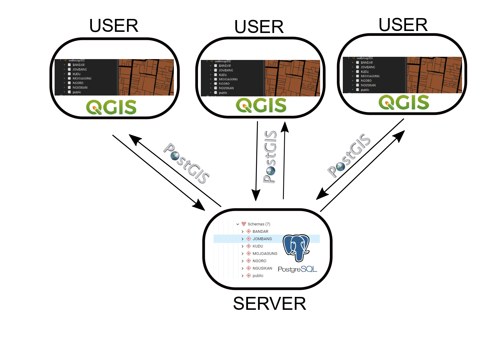

Pembuatan Lingkungan Analisis Spasial Server-side
Membuat database yang dilengkapi dengan ekstensi PostGIS yang agar database bisa membaca data yang memiliki geometri kemudian membuat schema dalam database agar bisa membagi data shapefile desa per-kecamatan. Koneksi dilakukan dengan QGIS agar data shp yang telah terhubung dengan database bisa digunakan untuk dianalisis oleh banyak user. Hasil analisis tersebut juga bisa langsung terupdate secara real time di tampilan WebGIS yang sudah disediakan.